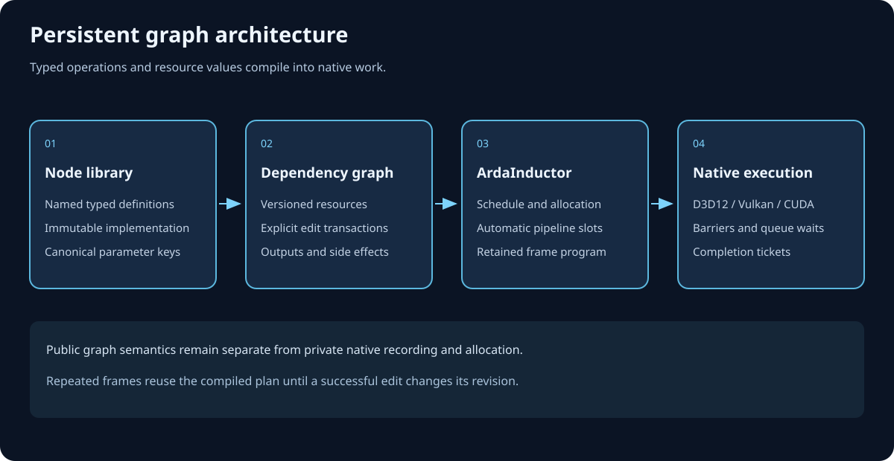

Deferred GPU-work orchestration
ArdaRenderGraph
ArdaRenderGraph (ARDG) lets renderer code declare named passes, logical resources, and access intent before commands are recorded. The graph then validates the declaration, discovers hazards, removes dead work, derives lifetimes and barriers, chooses available queues, records command lists, and submits through ArdaBackend's opaque RHI.
Learning objectives
After this chapter, you should be able to:
- distinguish a render graph from a renderer, graphics backend, RHI, and native graphics API;
- explain why deferring command recording creates opportunities for validation, culling, scheduling, and resource reuse;
- describe ARDG's build, compile, and execute phases and the mutations legal in each;
- explain why live execution order is a registration-order subsequence;
- place logical resources, physical RHI resources, pass parameters, and command lists in the correct ownership domain;
- state what successful execution proves—and what it does not prove about the GPU; and
- choose a reading path appropriate to integration, architecture, or diagnosis work.
Prerequisites
You should be comfortable with C++ object lifetime, GPU buffers and textures, command recording, and resource states. For the computer-science model, review directed acyclic graphs, topological order, and RAW, WAR, and WAW hazards.
ARDG consumes an initialized ArdaBackend device context. Read the ArdaBackend startup guide if device, queue, and presentation setup are not already established.
Audience and goal-directed paths
First integration
Read this overview, then Getting started. Concentrate on context creation, parameter reflection, output rooting, one-shot execution, and cleanup.
Renderer architect
Continue to Architecture. Focus on append-only registries, sentinels, hazard edges, culling roots, queue fallback, and physical-resource materialization.
Pass author
Start with the worked frame and getting-started example. Treat parameter macros as the declaration from which dependencies and physical-access validation are derived.
Performance engineer
Study compile products, parallel recording waves, queue dependencies, committed-resource pooling, and the limitations section before interpreting execution counters.
Failure investigator
Use failure analysis, implementation versus theory, and the deterministic DumpGraph() report.
Fundamentals: a program about a program
A conventional immediate renderer records GPU commands while it decides what to render. At that instant, the system sees only the commands already emitted and whatever manually maintained state surrounds them. A render graph instead builds a data structure describing future work. In compiler terms, that structure is an intermediate representation: passes are operations, logical resources are values, and dependency edges encode causality.
Transferable graph concepts
- Vertex
- A pass is a graph vertex: one named unit with a callback and declared accesses.
- Edge
- A producer edge says that data flows from an earlier pass to a later pass. A synchronization-only edge orders a write after prior readers without making those readers live.
- Root and reachability
- External or extracted outputs, synthetic boundaries, and
NeverCullwork identify observable roots. Backward reachability over data producers identifies live work. - Interval
- A logical resource's first and last live uses form an inclusive interval. Non-overlapping intervals permit safe reuse under additional descriptor and queue-domain constraints.
- Lowering
- Compilation turns semantic declarations into concrete queue choices, transitions, waits, lifetimes, and recording groups.
The model does not replace GPU knowledge. It centralizes that knowledge so one implementation can apply the same hazard, state, and lifetime rules across many rendering algorithms.
Module boundary

What ARDG owns
- one builder's logical pass, texture, buffer, view, uniform-buffer, and acceleration-structure records;
- frozen pass-parameter storage and graph-scoped blackboard values;
- dependency discovery, validation, culling, queue selection, lifetimes, transitions, and queue-wait metadata;
- execution-local materialization pools, command-list recording, deterministic submission, extraction publication, and execution reports.
What stays outside
- The renderer decides visibility, algorithms, pass contents, descriptors, and which result is observable.
- ArdaBackend supplies the device and queue capabilities and implements physical resources and command lists.
- The application owns external resources, extraction destinations, backend lifetime, frame pacing, and GPU-completion policy.
- Native D3D12 or Vulkan types do not cross the ARDG public boundary.
The public aggregate header is Source/ArdaRenderGraph/Public/ArdaRenderGraph.h. Core declarations live in the other public headers; compiler, executor, registry, allocator, and validation machinery remain under Source/ArdaRenderGraph/Private.
Why a deferred graph
Deferral separates declaring intent from choosing an execution plan. Once the complete workload is visible, ARDG can answer questions that a single pass cannot answer locally:
- Is the work observable? Backward liveness can remove pass chains that do not reach an external, extracted, or never-cull root.
- What must precede what? Metadata visitation records producer and synchronization edges from resource access history.
- Which state is required? The compiler merges compatible reads, rejects conflicting writes, and emits per-subresource texture transitions and whole-buffer transitions.
- Where can work run? Copy and async-compute requests are checked against queue availability and state compatibility; ineligible work falls back deterministically to graphics.
- How long is storage needed? Live intervals support exact committed-resource reuse when descriptors match, intervals do not overlap, and all use stays in one queue domain.
- What can record concurrently? Dependency levels form CPU recording waves, while
NeverParalleland immediate mode force serial recording where required.
The three-phase lifecycle

1. Build
Construct FARDGBuilder, allocate or supply parameters, create or import logical resources, register passes, add forward manual dependencies, populate the blackboard, and request extraction. The private implementation creates GraphPrologue first. Registries are append-only and arena-backed, so handles and record addresses remain stable.
2. Compile
Compile() validates the declaration, appends GraphEpilogue, chooses pipelines, builds reverse edges, culls dead passes, rebuilds live intervals, derives transitions and queue dependencies, and forms raster compatibility groups. It performs no GPU command recording. A later call returns the same cached FARDGCompileResult.
3. Execute
Execute() compiles on demand, materializes live resources, rebuilds transitions against actual physical identities, records command lists—possibly in parallel waves—submits in deterministic execution order, publishes extractions, runs device garbage collection, and returns one FARDGExecutionResult. A second execution is a fatal contract violation.
Worked example: deferred post-process output
Suppose a renderer imports a scene-color texture, computes a tone-mapped intermediate, and leaves the result available to later CPU-owned renderer state.
- Context. The application converts the live backend device context with
MakeRenderGraphContext(). Queue capabilities are copied; they are not guessed from platform or backend name. - Import. The swap-chain or scene texture is registered with a known entry state. The graph retains the RHI reference but does not take external ownership.
- Declare. A logical output texture is created from an RHI descriptor. No physical texture is allocated at this point.
- Parameterize. A generated standard-layout parameter struct stores the input and output accesses. The input requests shader-resource state; the output requests unordered access.
- Register.
AddPassfreezes parameter bytes and visits metadata. The write-after-read and read-after-write history becomes graph edges without the callback manually naming predecessors. - Root.
QueueTextureExtractionmarks the output observable and requests its exit state. Without extraction, external output, orNeverCull, the pass chain could be correctly culled as dead. - Compile. The live chain remains in registration order. The compiler derives transitions and extends the output lifetime through the epilogue.
- Execute. Physical storage is acquired, the callback retrieves only declared physical resources through the execution context, command lists are submitted, and the output reference is assigned.
- Synchronize. The caller waits through the RHI only when CPU access or external lifetime rules require GPU completion.
This pattern generalizes to shadow maps, visibility buffers, lighting, post-processing, compute preprocessing, and copy workflows: declare values and accesses first, let the graph derive orchestration, then record only the algorithm-specific commands.
Production invariants and tradeoffs
- One builder, one graph, one execution. Rebuild per workload or frame rather than trying to reset and replay a builder.
- Registration order is already topological. Manual dependencies must point from an earlier registered pass to a later one. Live execution order is the original registration-order subsequence, not an arbitrary topological sort.
- Declarations are the source of truth. Physical access through a context must correspond to a declared logical resource or exact view.
- Absence has two contracts.
TryGet*and blackboardTryGetreturn null for expected absence; checked operations use fatal checks for programmer errors. - Logical and physical identity differ. Several non-overlapping logical resources may reuse one compatible physical object; runtime transition rebuilding preserves physical state continuity.
- Ownership does not prove GPU completion. Retained references protect object lifetime, while queue synchronization proves execution progress.
- Queue requests are preferences under constraints. Missing capability or incompatible state falls back to graphics instead of changing correctness.
Tradeoffs
The graph pays CPU cost for metadata traversal, validation, compilation, allocation planning, transition rebuilding, and command-list management. It also constrains pass registration to forward causality and requires reflective parameter declarations. In return, rendering code gains centralized correctness checks, deterministic behavior, dead-work elimination, state lowering, parallel recording opportunities, and bounded resource reuse.
An immediate hand-authored command stream can be simpler for tiny one-off tasks and may expose backend-specific behavior sooner. It also makes global optimization and correctness depend on distributed manual bookkeeping. ARDG is most valuable when many passes share resources and the complete workload changes by frame.
Current implementation limits
- No arbitrary pass reordering. Forward-only edges make registration order topological; compilation culls a subsequence but does not search alternate schedules.
- One compile product and one execution. There is no reset, replay, incremental mutation after compile, or second execute.
- Physical placed-resource aliasing is disabled.
ArdaRenderGraphExecutor.cppcomputes an ideal heap layout when virtual-resource capabilities exist, but safely falls back because the portable RHI lacks required aliasing barriers and heap-compatibility queries. - Committed-object pooling is execution-local. Compatible textures and buffers can be recycled only across strictly non-overlapping inclusive lifetimes in one queue reuse domain.
- Buffer state tracking is whole-resource. Byte ranges are retained for declaration validation, but compiler transition state is one slot per buffer. Texture state is tracked per mip and array slice.
- Raster groups are metadata. Compatible adjacent raster passes receive group indices; grouping does not itself merge command lists or native render passes.
- Raw command-list access cannot be proven complete. Independently retained RHI references can bypass graph declaration, dependency, transition, and lifetime inference.
- Execution success is asynchronous. No implicit wait for complete GPU retirement is part of the graph contract.
Failure modes: symptom, cause, prevention, recovery
- Pass silently disappears from execution
- Cause: it has no data path to an external or extracted output and lacks
NeverCull. Prevent: identify the real observable output instead of marking every pass live. Recover: inspectDumpGraph(), then add the missing declaration, extraction, external write, or deliberate side-effect flag. - Fatal check while adding a backward dependency
- Cause: the producer was registered after the consumer. Prevent: register producers first. Recover: reorder setup; ARDG does not topologically sort a backward edge.
- Fatal read-before-produce validation
- Cause: a graph-created resource or texture subresource is read before any live write. Prevent: import initialized data or register a producing pass first. Recover: fix declaration order and selected mip/slice, not merely the callback.
- Fatal undeclared physical access during a callback
- Cause: the callback asks the execution context for a resource or exact view absent from its frozen parameters. Prevent: make parameter declarations complete. Recover: add the correct member and access state; do not hide the resource behind the raw command list.
- Async or copy work runs on graphics
- Cause: the queue is unavailable, immediate mode is active, or declared states are incompatible. Prevent: treat queue flags as constrained eligibility. Recover: inspect context capabilities and pass states; graphics fallback is expected behavior.
- Output reference exists but CPU data is stale
- Cause: extraction publishes after submission, not GPU completion. Prevent: use RHI synchronization for readback and external reuse. Recover: wait for the relevant submitted instance before consuming results.
- Builder cannot be reused after an exception or fatal path
- Cause: execution failure is sticky to avoid treating partial submission as replayable. Prevent: validate declarations and device lifetime before execute. Recover: discard the builder, establish safe GPU state through the backend, and build a new graph.
Chapter summary
- ARDG is a deferred intermediate representation for passes, logical resources, accesses, and callbacks above the opaque RHI.
- Deferral enables whole-workload validation, liveness, transition lowering, queue selection, parallel recording, and resource reuse.
- Each builder moves from mutable build to cached compilation to one-shot execution; mutation never reopens.
- Forward edges make registration order topological, and culling produces a registration-order subsequence.
- Logical ownership, retained RHI ownership, CPU submission, and GPU completion are distinct concerns.
Review and checkpoint questions
- What information becomes available only because command recording is deferred?
- Why can ARDG avoid a general-purpose topological sort?
- What makes a pass observable and therefore live?
- Why must extraction storage remain valid through execution?
- How can two logical resources legally refer to one physical resource?
- What additional operation is required after successful execution before CPU readback?